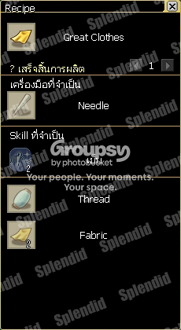
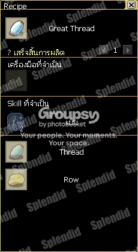

ของพวกนี้หาจากไหนอะครับ
Log , Waterproof , Fabric , Greater , Cloth , Row , Wood , GreatStrap , GreatTread
http://eco.froztic.in.th/archive/ecofanclub/
http://eco.froztic.in.th/archive/ecofanclub/viewtopic.php?f=26&t=77195
poonhiha เขียน:Log , Waterproof Fabric , Greater Cloth , Row , Wood , GreatStrap , GreatTread






(ps)smart เขียน:Needle ซื้อได้จากร้านตัดเย็บทั่วไป
Greater Cloth เลื่อนไปดูข้างบนเอง